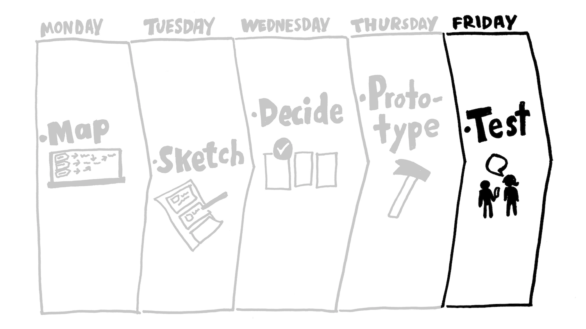

The Design Sprint
and a UX Story
PSIA March 2017
Last Year, 3 UX Professionals resigned from their work
Election Campaign Time; Things were getting "Toxic". Felt Frustrated.
"Focus on your Circles of Influence"
The oldest of the 3 went to UX Singapore
Singapore Design for Government
Could we make a difference with UX Design?
First, Understand the Culture and Context
- Discussions with Fellow Designers
- Discussed what would work within the local context
Research
- Successful Design Methodologies
- Case Studies of what has worked
- How Government and Business Have Applied Design
We needed a Process/Framework for UX Design
Sprint

Released in March 2016
Sprint Stories
Google's Design Sprint
Day 1
Journey Mapping, Targetting
Journey Mapping Example
Day 2

Lightning Demos
Sketching
Day 3
Deciding Solutions
Making Storyboards
Larger Story
Day 4
Low Fidelity Prototype
High Fidelity Prototype
Day 5
Initial Prototype Testing
Testing with Client
Another Way to See it
Design Sprint Game
3 UX Designers
- Mica Diaz De Rivera
- Christine Balatbat
- Me.
"Focus on your circles of influence"
RJ David, Founder of Sulit.com.ph / OLX.ph
In UX Singapore
UX Conference 2017

UX Conference Speakers
Design Sprint For Different Sectors
Design Sprint For Government
Same Process Designing the Conference
We can complain.
Or we can do something about it
But Why Design?
"VCs are Investing in Design-focused Companies"
John Maeda, Design in Tech
Design In Tech Insights
- Design isn’t just about beauty; it’s about market relevance and meaningful results.
- 27 Startups that were co-funded by designers have been acquired since 2010 by companies like Google, Facebook, Adobe, LinkedIn, Dropbox & Yahoo
- 71 Design Agencies have been acquired since 2004 >50% of which have been acquired since 2015
Design Sprint is a Tool
How are you going to use this Tool?
UXPH / Apical Design
ely@apicaldesign.com
ely@uxphilippines.com